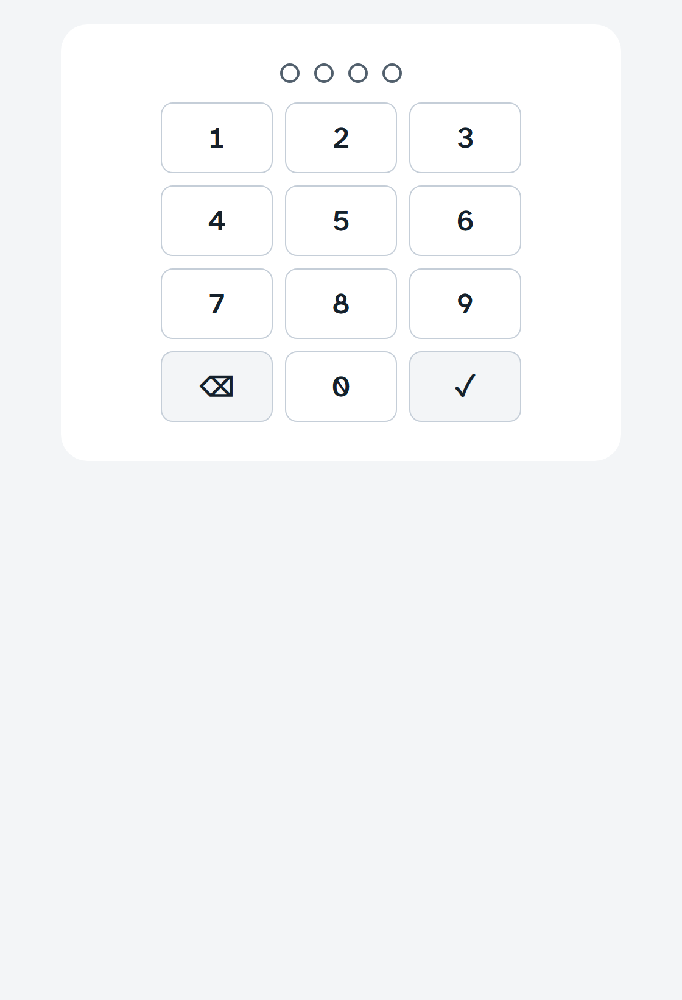
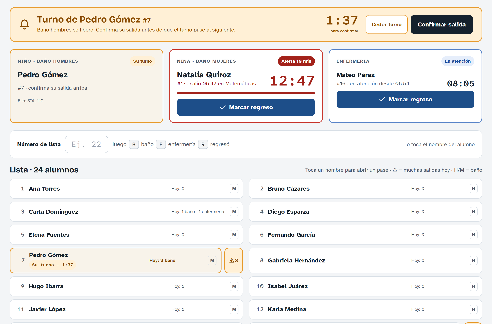

Cada salón tiene una computadora con Pase Sanitario abierto todo el día. Ahí el maestro da los pases al baño. El alumno no toca nada.
1
Normalmente está bloqueadaMuestra el grupo, la clase actual y quién está fuera del salón, pero no deja dar pases.
2
Desbloquea con tu PINEscribe tus 4 dígitos. Los pases que des quedan a tu nombre. Si eres suplente, usa tu propio PIN.
3
¿Aún no tienes PIN?Créalo en tu celular: Perfil → Definir mi PIN.

Teclado del PIN
5 intentos equivocados bloquean el teclado 1 minuto. Espera y vuelve a intentar.
No cierres la app. Si se cerró, ábrela desde el ícono Pase del escritorio o de la barra de tareas.
Pase Sanitario · Instituto Oviedo1
Dar un pase al baño

Computadora desbloqueada · datos de ejemplo
1
Toca el nombre del alumno y luego BañoEl baño de hombres o de mujeres se elige solo. El sistema dice si sale ya, queda en fila o espera a alguien de su grupo.
2
Arriba ves quién está fueraTarjetas Niño y Niña con el nombre y el cronómetro. Cuando regrese, toca Marcar regreso.
3
“Turno de…” (franja amarilla)Le tocó al alumno que estaba en fila. Toca Confirmar salida cuando salga (tienes 2 minutos).
Pase Sanitario · Instituto Oviedo2
Atajo con el teclado
En el cuadro Número de lista escribe el número del alumno y luego una letra:
Baño7 + B abre el pase de #7
Regresó7 + R marca el regreso de #7
Enfermería7 + E solo si dirección lo indica
Al terminar tu clase
1
Toca BloquearEl botón con el candado, arriba a la derecha. Si lo olvidas, se bloquea sola 5 minutos después de que termina la clase.
2
Los alumnos que siguen fuera no se pierdenEl siguiente maestro los ve con “salió en…” y marca su regreso.
Bueno saber
En Inglés la lista cambia solaAparecen los alumnos del nivel que se da en este salón, con su grupo junto al nombre.
¿Te equivocaste?Toca Deshacer en los 10 segundos siguientes.
Alerta de 10 minutosSi un alumno tarda, su tarjeta se pone roja y prefectura recibe el aviso.
Dice “Sin conexión”Revisa el internet de la computadora. Al volver, se actualiza sola.
Botón ⋯ (arriba): activa las notificaciones de esta computadora. Lo configura el administrador al instalarla; no hace falta tocarlo.